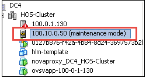
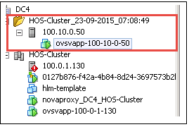

ESX host commissioning is a functionality provided to a user to add additional ESX hosts to an already-activated cluster.
# eon cluster-list --vcenter-id <vCenter ID>
For example:
# eon cluster-list --vcenter-id BC9DED4E-1639-481D-B190-2B54A2BF5674 +------------+------------+-----------------+-----------------+ | MOID | Name | Datacenter | Import Status | +------------+------------+-----------------+-----------------+ | domain-c21 | Cluster1 | DC1 | activated | +------------+------------+-----------------+-----------------+

Any host that is in maintenance mode and without OVSvAPP will be considered as a new host to be activated.# eon cluster-import --vcenter-id <vCenter ID> --cluster-name <Cluster Name> --cluster-moid <Cluster Moid>
For example:
# eon cluster-import --vcenter-id BC9DED4E-1639-481D-B190-2B54A2BF5674 --cluster-name Cluster1 --cluster-moid domain-c21 +--------------+-----------+ | Property | Value | +--------------+-----------+ | cpu_free | 83071.73 | | cpu_total | 83072 | | cpu_used | 0.27 | | datacenter | DC1 | | disk_free | 1022.79 | | disk_total | 1023.75 | | errors | [] | | memory_free | 496.82 | | memory_total | 511.76 | | memory_used | 14.94 | | name | Cluster1 | | state | importing | | switches | [] | +--------------+-----------+
After successful import the cluster state will change to partially_activated and the hosts would have moved to folder with ovsvapp installed.
# eon cluster-list --vcenter-id <vCenter ID>
For example:
# eon cluster-list --vcenter-id BC9DED4E-1639-481D-B190-2B54A2BF5674 +------------+----------+------------+---------------------+ | MOID | Name | Datacenter | Import Status | +------------+----------+------------+---------------------+ | domain-c21 | Cluster1 | DC1 | partially_activated | +------------+----------+------------+---------------------+

# eon cluster-activate --vcenter-id <vCenter ID> --cluster-moid <Cluster Moid>
For example:
eon cluster-activate --vcenter-id BC9DED4E-1639-481D-B190-2B54A2BF5674 --cluster-moid domain-c22
After successful activation, the cluster state will change to activated.
# eon cluster-list --vcenter-id <vCenter ID>
For example:
# eon cluster-list --vcenter-id BC9DED4E-1639-481D-B190-2B54A2BF5674 +------------+----------+------------+---------------------+ | MOID | Name | Datacenter | Import Status | +------------+----------+------------+---------------------+ | domain-c21 | Cluster1 | DC1 | activated | +------------+----------+------------+---------------------+
cd ~/helion/hos/ansible git add -A git commit -m "My config or other commit message"
ansible-playbook -i hosts/localhost config-processor-run.yml; ansible-playbook -i hosts/localhost ready-deployment.yml; cd /home/stack/scratch/ansible/next/hos/ansible;
ansible-playbook -i hosts/verb_hosts guard-deployment.yml ansible-playbook -i hosts/verb_hosts osconfig-run.yml --limit '*esx-ovsvapp' ansible-playbook -i hosts/verb_hosts hlm-deploy.yml --limit NEU-OVSVAPP